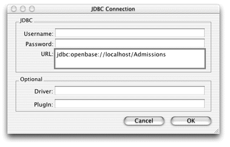
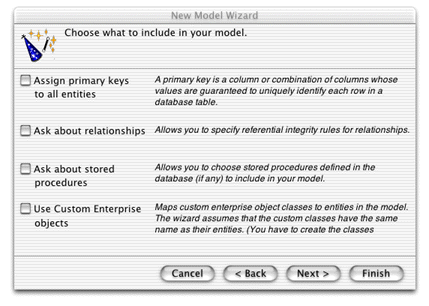

EOModeler is a powerful application that provides tools to build and manage your business logic. Its product is an EOModel, which contains database connection information, such as the database adaptor, version number, and login information. EOModels also form the foundation of your business logic—they offer an object-oriented view of the tables and relationships in your database. You use EOModeler to
A good model is important because Direct to Java Client's generation layer analyzes EOModels to generate user interfaces. In fact, a Direct to Java Client application is a great way to test the integrity of EOModels.
Follow these steps to create an EOModel:
jdbc:openbase://localhost/Admissions,
as shown in Figure 3-3. Click OK.Figure 3-3 JDBC connection information
Figure 3-4 Deselect all options for this model
